1. totonoumovie とは
TotonouMovie は、Claude Code に「この動画を編集して」と話しかけると、カット・字幕・効果音・音声の仕上げまでを AI が進めてくれるプラグインです。ただ、ふだんはチャットで進むため、出来上がった字幕や効果音を「見ながら」少し直したいときに手間がかかります。
totonoumovie は、その TotonouMovie を画面から動かし、結果をタイムラインで直せるようにしたアプリです。中で使っているのは、あなたの Claude Code に入っている TotonouMovie そのものなので、仕上がりの品質や手順は変わりません。
| できること | 動画を渡して AI に編集してもらう（途中の確認は画面で答える）／字幕の本文・時刻・見た目を直す／AI のカット候補を聞いて選んで承認する／効果音・寄り・モーション・画像・章・BGM を足す・動かす・消す／完成と同じ見た目の静止画と試作を作る／書き出す／AI に直しを頼む／AI に渡す指示（プロンプト）を自分好みにする |
|---|---|
| できないこと | TotonouMovie が無い状態での動画づくり（TotonouMovie が必須です）／カットの手書き（カットは TotonouMovie の承認の仕組みで決めます）／画面の重ね表示は近似なので、正確な見た目は「静止画」「試作」で確かめます |
2. 先に用意するもの
| もの | 説明 |
|---|---|
| TotonouMovie が動く状態 | 配布元の「かんたん導入ガイド（Mac／Windows）」の手順 0〜5 を済ませ、「TotonouMovie のセットアップをして」で最後に PASS が出た状態にしておきます。Claude の有料プラン・uv・ffmpeg・Node.js・Claude Code のターミナル版も、このとき入ります。 |
| GitHub のアカウント | totonoumovie は非公開のリポジトリで配っています。配布者から招待を受けた GitHub アカウントが必要です（招待メールの「Accept invitation」を押しておきます）。 |
| Python 3 | totonoumovie の本体は Python で動きます（下の手順で入れます）。 |
| ブラウザ | Google Chrome をおすすめします（動画の再生とタイムラインの操作が安定します）。 |
3. 入れかた
お使いのパソコンを選んでください。
- 道具を入れる（ターミナルで1回だけ）
「ターミナル」アプリを開き、1行ずつ貼り付けて Enter を押します。GitHub の操作に使うghと Python を入れます。brew install gh python - GitHub にログインする
質問には「GitHub.com」→「HTTPS」→「Yes」→「Login with a web browser」の順に Enter で答えます。表示された8桁のコードを、開いたブラウザに入れて承認します。gh auth login - totonoumovie を入れる（ホームフォルダに
totonoumovieフォルダができます）gh repo clone wbrs-gh/totonoumovie ~/totonoumovie - どこからでも
totonoumovieで起動できるようにするecho 'export PATH="$HOME/totonoumovie:$PATH"' >> ~/.zshrc source ~/.zshrc - 起動して確かめる
ブラウザが開き、上に 「TotonouMovie 2.2.0 を使います」と緑の帯が出れば完了です。totonoumovie
- 道具を入れる（PowerShell で1回だけ）
スタートメニューで「PowerShell」と入れて開き、1行ずつ貼り付けて Enter を押します。
全部終わったら、PowerShell をいったん閉じて開き直します。winget install --id=GitHub.cli -e winget install --id=Python.Python.3.12 -e - GitHub にログインする
質問には「GitHub.com」→「HTTPS」→「Yes」→「Login with a web browser」の順に Enter で答えます。表示された8桁のコードを、開いたブラウザに入れて承認します。gh auth login - totonoumovie を入れる（ユーザーフォルダに
totonoumovieフォルダができます）gh repo clone wbrs-gh/totonoumovie "$HOME\totonoumovie" - どこからでも
totonoumovieで起動できるようにする
終わったら PowerShell を閉じて開き直します。$p = [Environment]::GetEnvironmentVariable("Path", "User") [Environment]::SetEnvironmentVariable("Path", "$p;$HOME\totonoumovie", "User") - 起動して確かめる
ブラウザが開き、上に 「TotonouMovie 2.2.0 を使います」と緑の帯が出れば完了です。totonoumovie
~/Movies/totonou、Windows は C:\Users\あなたの名前\Videos\totonou）。Dropbox・Google ドライブ・OneDrive・iCloud などの同期フォルダの外に置いてください。4. 起動と終了
- 起動：ターミナル（Windows は PowerShell）で
totonoumovieと入れて Enter。ブラウザで編集画面が開きます。 - 終了：起動したターミナルで
Ctrl＋C。ブラウザのタブは閉じてかまいません（編集は自動で保存されています）。 - ブラウザを閉じてしまったときは、ターミナルに出ている
http://127.0.0.1:8780/を開けば戻れます。 - AI の作業はアプリの裏で続きます。ただしターミナルを閉じると AI の作業も止まるので、作業中は開いたままにしておきます。
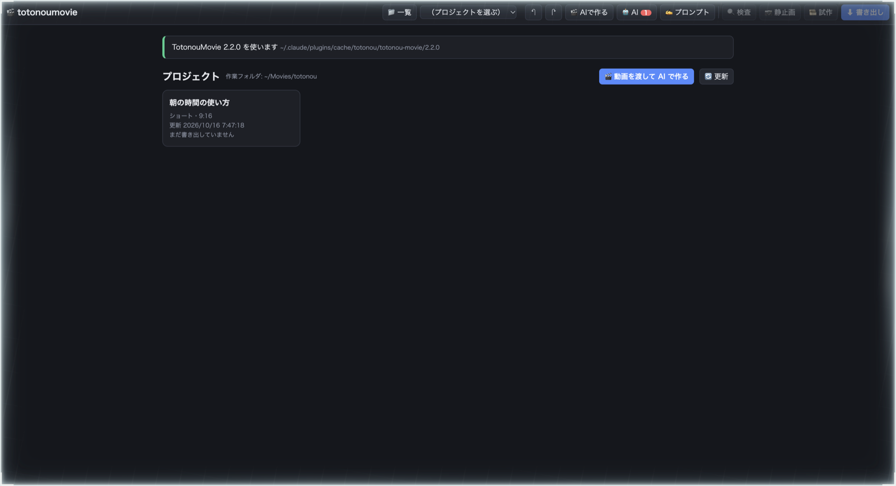
5. 画面の見方
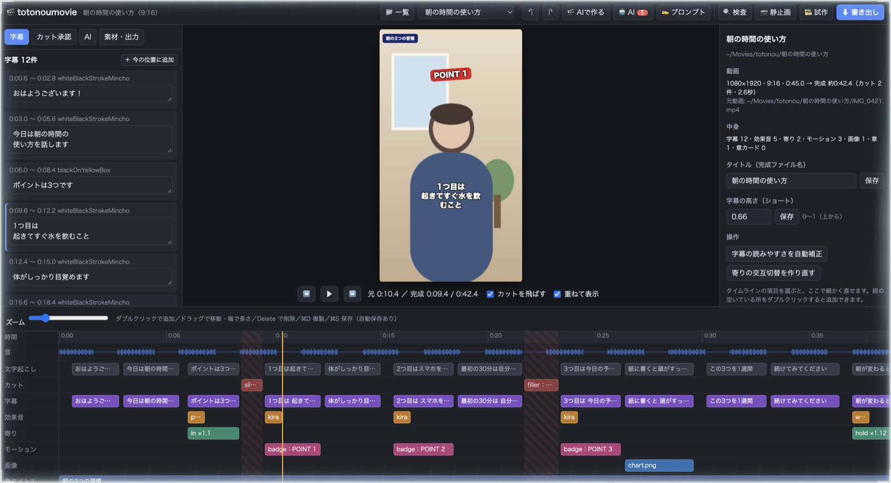
- 1左のタブ：字幕の一覧／カット承認／AI／素材・出力 を切り替えます。
- 2上のボタン：AI で作る・AI の作業・プロンプト・検査・静止画・試作・書き出し。
- 3字幕の一覧：本文をその場で直せます。クリックでその場面へ移動します。
- 4プレビュー：元の動画に、字幕・画像・モーションなどを重ねて表示します（見た目は近似）。
- 5再生：「元」の秒と「完成」の秒を両方表示。「カットを飛ばす」で完成と同じ流れで再生します。
- 6プロパティ：選んだ項目の細かい設定。何も選んでいないときはプロジェクトの情報です。
- 7タイムライン：文字起こし・カット・字幕・効果音・寄り・モーション・画像・章・BGM の段。
タイムラインの操作
| やりたいこと | 操作 |
|---|---|
| その位置へ移動 | 上の「時間」の段をクリック（ドラッグで連続して動かせます） |
| 項目を選ぶ | クリック（右のプロパティに詳細が出ます） |
| 時刻をずらす／長さを変える | まん中をドラッグ／左右の端をドラッグ |
| 追加する | 段の空いている所をダブルクリック |
| 消す・複製する | Delete／⌘D（Windows は Ctrl+D） |
| 元に戻す・やり直す | ⌘Z／⌘⇧Z（Windows は Ctrl+Z／Ctrl+Shift+Z） |
| 再生・停止 | Space。←→ で1コマ、Shift と一緒で1秒 |
data/ の中なので、Claude Code から TotonouMovie を使ったときにも同じ内容が使われます。6. AI で動画を作る
上の 🎬 AIで作る を押し、動画を選んで始めます。あとは TotonouMovie の手順どおりに AI が進め、人の判断が必要な所でだけ止まって画面で聞いてきます。
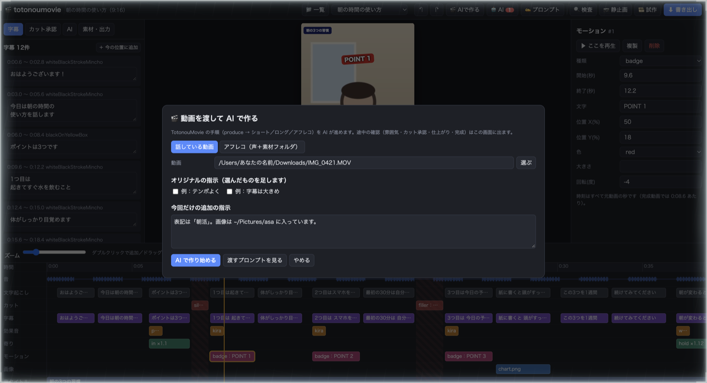
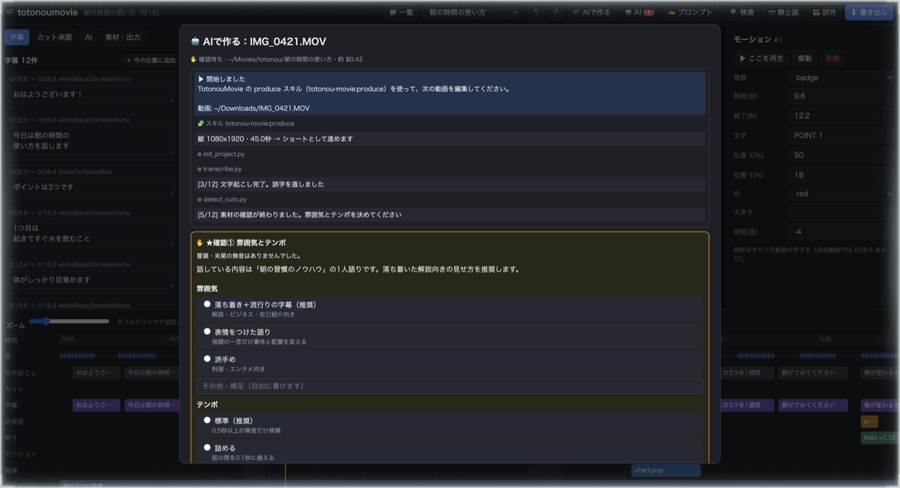
- 確認②（カット承認）だけは、AI ではなくあなたが画面で承認します。確認の中の「✂ カット承認を開く」を押すと、編集画面の「カット承認」が開きます（8章）。
- 確認④の視聴で OK と答えると、AI が完成の記録を残します。直したいところがあれば、そのまま文章で返事をすれば直してくれます。
- 画像・BGM・人名の表記などを持ち込むときは、「今回だけの追加の指示」に書くか、確認①で答えます。
- AI の作業は、ウィンドウを閉じても裏で続きます。上の 🤖 AI からいつでも様子を見られます。
7. 字幕を直す
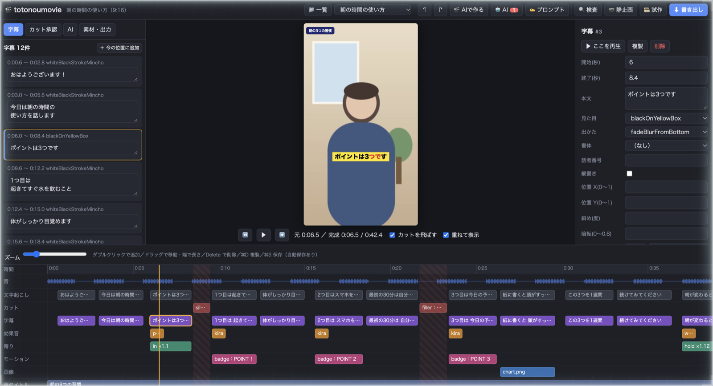
- 本文：左の「字幕」タブの一覧で、そのまま書き換えます（改行もそのまま反映されます）。
- 出るタイミング：タイムラインの字幕をドラッグ、または右の「開始」「終了」に秒を入れます。
- 見た目：右の「見た目」（TotonouMovie の字幕テンプレート）・「出かた」・「書体」・「縦書き」・「位置」・「文字色／縁の色／帯の色」。
- 一部の文字だけ色を変える：「部分装飾（JSON）」に
[{"range":[0,2],"color":"#e02020"}]のように書きます（0文字目から2文字ぶん）。 - 文字起こしから字幕を作る：「文字起こし」の段の発話を選び、右の「この発話から字幕を作る」。
- 直したあとは、上の 🔍 検査 で字幕の点検（長すぎる・重なっている など）と書き出し前の検査ができます。白い文字が背景に埋もれるときは、プロパティの「字幕の読みやすさを自動補正」。
8. カットを承認する
TotonouMovie では、AI はカットの候補を出すだけで、切るかどうかは人が決めます。totonoumovie でも同じで、左の「カット承認」タブで候補を聞いて選び、承認します。
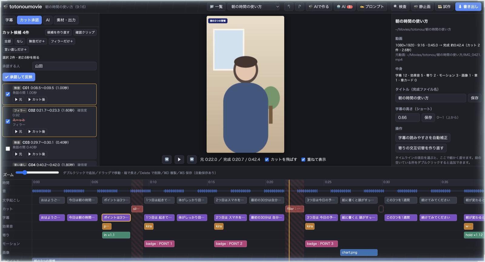
- 候補には種類（無音・フィラー・言い直し・合図 など）、時刻、削る言葉（赤い取り消し線）、理由が出ます。
- ▶ 元（前後2秒をそのまま）と ▶ カット後（その候補を切った流れ）で聞き比べます。タイムラインの「カット」の段の点線の枠も候補です。
- 残したい候補はチェックを外します。「全部」「なし」「無音だけ＋」などでまとめて選べます。
- 「承認する人」に名前を入れて ✔ 承認して反映。完成の尺が短くなり、タイムラインに斜線の区間（切られる所）が出ます。
- 切りすぎを戻す：戻したい候補のチェックを外して、もう一度「承認して反映」。消えた字幕も戻ります。
- 候補が無いときは、候補を作り直すを押すか、AI に「カット候補を作って」と頼みます（文字起こし・無音の検出が先に必要です）。
- 冒頭フック（ショートの頭に入れる見せ場）を入れたあとは、カットを変えられません。
9. 効果音・寄り・モーション・画像・章・BGM
どれも、タイムラインの段の空いている所をダブルクリックで追加し、ドラッグで動かし、右のプロパティで細かく直します。
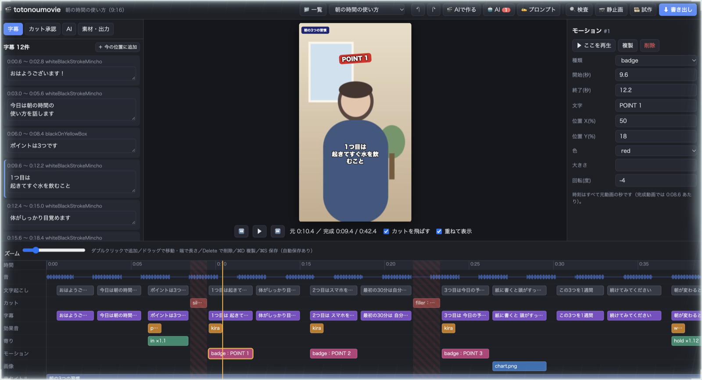
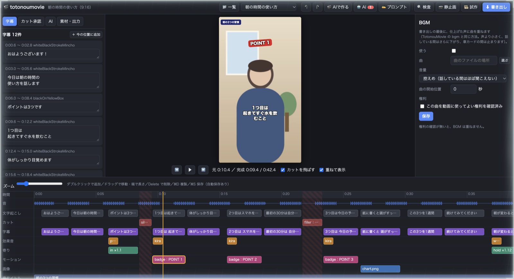
| 段 | できること |
|---|---|
| 効果音 | 音の種類（🔊で試聴）・音量・長さ。TotonouMovie 同梱の効果音から選べ、書き出し用のフォルダへ自動でコピーされます。 |
| 寄り | 話している人にゆっくり寄る演出。倍率（1.08〜1.15 がおすすめ）・動き（ゆっくり寄る／寄って止める／寄って戻る／交互）・中心。 |
| モーション | 強調の文字（popText）・バッジ・一覧・枠・蛍光ペン・手書きの丸や矢印。位置は画面の％で指定します。 |
| 画像 | 差し込む画像（＋で追加）・配置（全画面／収める／分割／ワイプ）・動き。画像は「素材・出力」タブからも追加できます。 |
| 章タイトル／章カード | 左上に出る今の話題の見出しと、章の切り替わりに差し込むカード（その分、動画が長くなります）。 |
| BGM | 曲・音量（控えめ／標準）・曲の開始位置。権利を確認済みの曲だけ、書き出しのときに声の下へ重ねます（話している間は自動で小さくなります）。 |
10. 確かめる・書き出す
| ボタン | 何をするか | 目安 |
|---|---|---|
| 🔍 検査 | 字幕の点検と書き出し前の検査（TotonouMovie の lint・qa_static）。結果がそのまま表示されます。 | 数秒〜数十秒 |
| 📷 静止画 | 今の位置を、完成と同じ仕組み（Remotion）で1コマにします。見た目の最終確認に。 | 初回は数分、2回目から数秒 |
| 🎞 試作 | 指定した区間（30〜45秒がおすすめ）を、音付き・縮小で書き出します。 | 1分前後 |
| ⬇ 書き出し | 完成動画を書き出し → 音声の仕上げ（雑音を減らして YouTube の標準音量にそろえる）→ BGM → 自動検査。 | ショート数分、ロング数十分 |
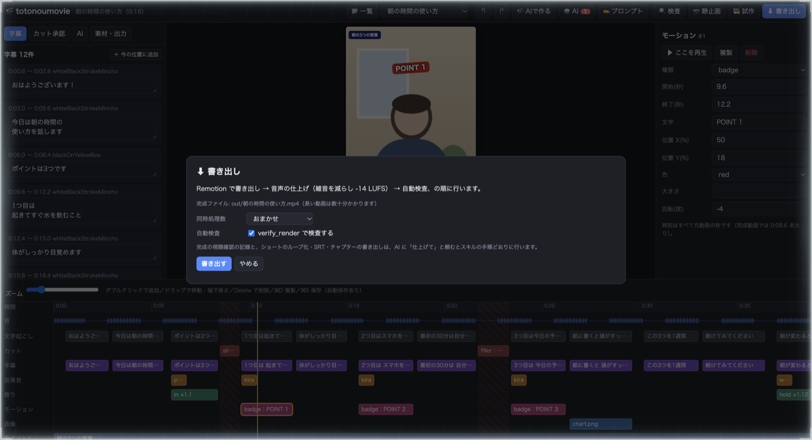
- 完成ファイルは、プロジェクトの
out/フォルダに（タイトル）.mp4で保存されます。タイトルはプロパティの「タイトル（完成ファイル名）」で変えられます。 - 進み具合は右下のカードに出ます。「ログ」で詳しい様子、「中止」で止められます。
- ショートのループ化・字幕ファイル（SRT）・YouTube のチャプター・完成の確認記録は、AI に「仕上げて」と頼むと、TotonouMovie の手順どおりに行います。
11. AI に直してもらう・プロンプト
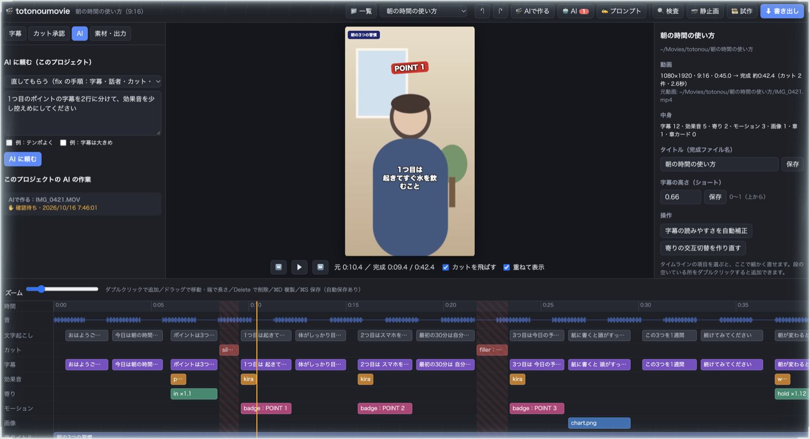
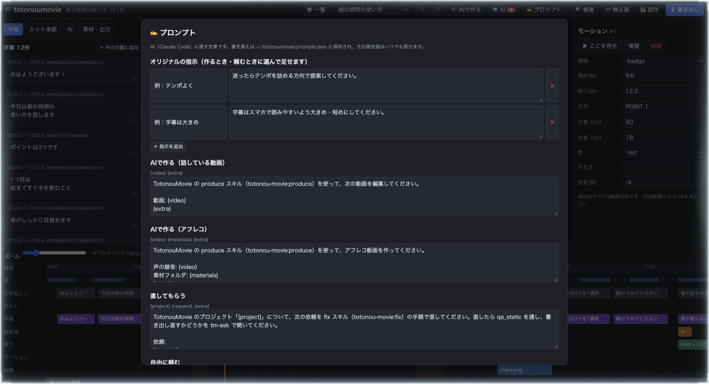
AI に頼む
- 直してもらう：TotonouMovie の fix の手順で直します。例「1分20秒あたりの『機会』を『機械』に」「話者が逆になっている」「このカットを戻して」。
- 自由に頼む：例「効果音を足して」「章を作って」「仕上げて（ループ化・SRT・チャプターまで）」。
- 時刻は、完成動画の秒で伝えてかまいません（AI が元の動画の秒に直します）。
プロンプトを自分好みにする
- オリジナルの指示：名前を付けて保存しておき、「AI で作る」「AI に頼む」のときにチェックで足せます。例「テンポよく：迷ったらテンポを詰める方向で提案して」。
- 毎回足す指示：すべての依頼の最後に足されます（例：「人名は必ず確認してから字幕にして」）。
- 種類ごとの文章：「AI で作る」「直してもらう」などで渡す文章そのものを書き換えられます。
{video}などの部分は実行時に置き換わります。 - 書き換えたものは「既定に戻す」でいつでも元に戻せます。保存先は
~/.totonoumovie/prompts.json（あなたのパソコンの中）です。
12. 新しい版が出たとき
ターミナル（Windows は PowerShell）で次を送ります。作ったプロジェクトやプロンプトの設定はそのまま残ります。
cd ~/totonoumovie
git pullcd "$HOME\totonoumovie"
git pull起動中だった場合は、Ctrl＋C で止めてから totonoumovie で起動し直します。TotonouMovie 本体の更新は、配布元の導入ガイドの「新しい版が届いたとき」の手順で行います。
13. うまくいかないとき
| こんなとき | こうする |
|---|---|
totonoumovie: command not found（Windows は「認識されません」） | 手順3-4 のあと、ターミナル／PowerShell を開き直していないことがあります。開き直して試します。 |
gh repo clone で「Could not resolve to a Repository」 | 招待を受けていない、または別の GitHub アカウントでログインしています。招待メールの承認と、gh auth status のアカウントを確かめます。 |
| 赤い帯「TotonouMovie プラグインが見つかりません」 | TotonouMovie の導入が済んでいません。配布元ガイドの手順4（プラグインを入れる）を済ませます。 |
| 黄色い帯「初期設定がまだのようです」 | Claude Code で「TotonouMovie のセットアップをして」と話しかけ、PASS まで進めます。 |
| 「claude コマンドが見つかりません」 | Claude Code のターミナル版を入れて、ターミナルを開き直します（claude --version で確認）。 |
| 動画が再生されない・カクカクする | 右下に「軽い再生用の動画を準備中」と出ている間は、なめらかになるまで少し待ちます。Chrome を使ってください。 |
| 静止画・書き出しが「Timed out」で止まる | 初回の準備に時間がかかっています。もう一度実行するか、書き出しの「同時処理数」を 1 にします。 |
| AI の作業が「⚠ エラー」になった | 「🤖 AI」から開いてエラーの内容を確かめます。答えを送れる状態なら、そのまま「続けてください」と返事をすると再開できます。 |
| カットの承認で「候補または素材が変更されています」 | 候補を作ったあとに素材や字幕の元が変わりました。「候補を作り直す」を押してから選び直します。 |
| それ以外 | Claude Code に「TotonouMovie が動かない」と伝えると、TotonouMovie の診断が動きます。 |